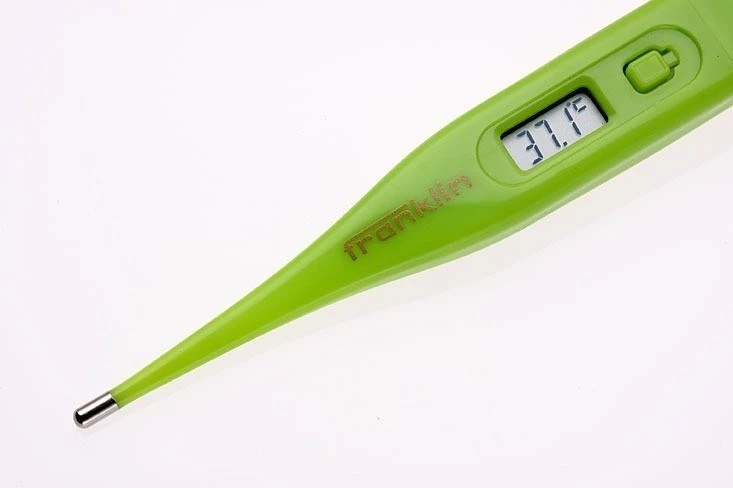

Manual de instrucciones
1ra Actividad

El termómetro es un dispositivo cotidiano. Su uso requiere una secuencia precisa de pasos, típicos de un manual de instrucciones.
Pregunta de Elección Múltiple
Solución
Solución
Solución
Solución
Solución
Solución
Pregunta Verdadero-Falso
¿Qué características son típicas de un texto instructivo?
Retroalimentación
Verdadero
Retroalimentación
Verdadero
Retroalimentación
Falso
Retroalimentación
Verdadero
Retroalimentación
Falso
Retroalimentación
Verdadero
Un poco de teoría...
El manual de instrucciones es un tipo de texto instructivo cuyo propósito principal es orientar al lector en el uso correcto de un objeto, dispositivo, herramienta o sistema. Se trata de un género funcional y técnico que se encuentra comúnmente en productos tecnológicos, electrodomésticos, aplicaciones, aparatos médicos o cualquier elemento que requiera una secuencia de pasos para su funcionamiento adecuado o seguro.
La estructura de este tipo textual es clara y está organizada de forma lógica y progresiva. Suele iniciar con un título identificatorio y una breve presentación o advertencia. Luego se expone un listado de materiales o componentes (en el caso de dispositivos), seguido de una serie de instrucciones numeradas o secuenciadas mediante conectores temporales como primero, a continuación, por último, que marcan el orden en que deben ejecutarse las acciones.
Una de las particularidades centrales del manual de instrucciones es su lenguaje preciso, técnico y directo, con un tono objetivo y neutral. Predominan las formas verbales en imperativo (encendé, colocá, verificá) o en infinitivo (presionar, ajustar, instalar), ya que ambas formas indican acciones que deben realizarse. Además, es frecuente el uso de construcciones impersonales (“se recomienda...”, “debe mantenerse alejado del calor”) que refuerzan el carácter general y aplicable a cualquier usuario.
Este tipo de texto cumple una función claramente directiva: busca que el lector ejecute lo indicado de forma efectiva y sin ambigüedades. Por eso, se cuida especialmente la claridad en la redacción, el orden lógico y la inclusión de ilustraciones o íconos que complementen las explicaciones verbales.
Como parte de la familia de los textos instructivos, el manual se diferencia de otros como la receta o el prospecto por su mayor carga técnica y su orientación a dispositivos u objetos más que a procedimientos corporales o simbólicos. Sin embargo, comparte con ellos la necesidad de una organización secuencial y un uso lingüístico específico que asegure que el lector comprenda y ejecute correctamente las acciones.
Más info
En las siguientes páginas pueden ampliar y/o reforzar sus conocimientos sobre el género Manual de instrucciones:
https://es.wikipedia.org/wiki/Texto_instructivo
https://www.ejemplos.co/10-ejemplos-de-textos-instructivos/
https://es.slideshare.net/slideshow/textos-instructivos1/7335731
Obra publicada con Licencia Creative Commons Reconocimiento Compartir igual 4.0